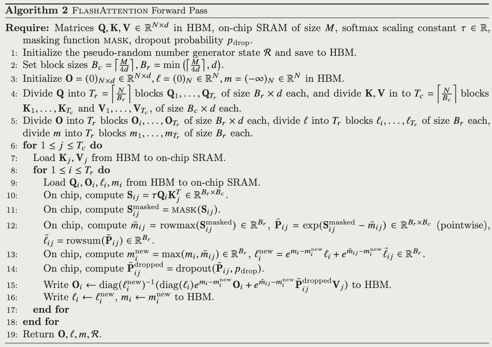
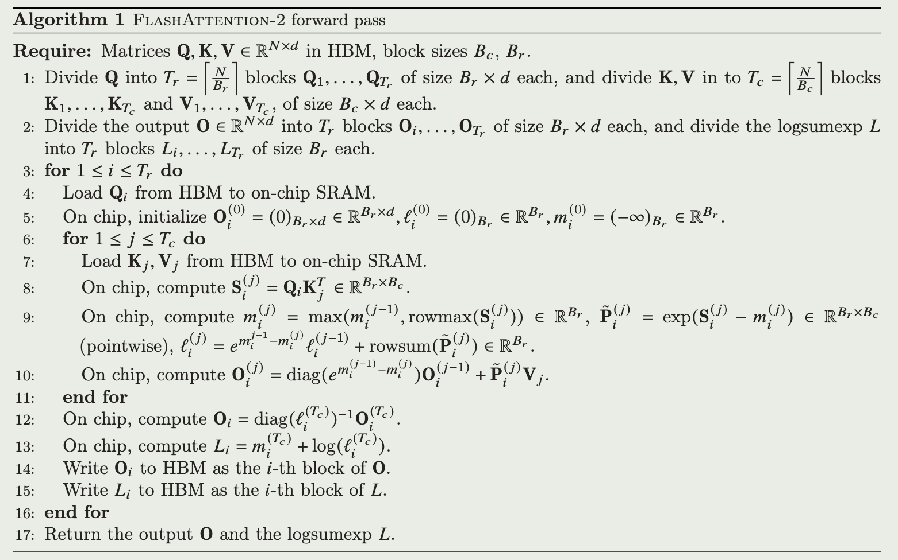
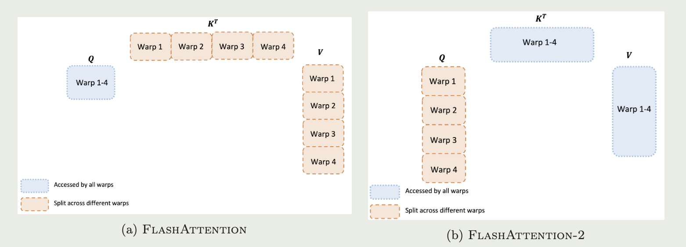

FlashAttention-2: Faster Attention with Better Parallelism and Work Partitioning
2024-4-5
intro
本文主要从以下三点对FlashAttention的算法进行改进:
- 调整计算逻辑, 减少non-matmul FLOPs
- 并行注意力计算
- 任务分配策略, 减少通信
实现了FlashAttention的2倍速度
Reduce non-matmul FLOPs
Forward
FlashAttention forward
\[
\begin{aligned}
\mathbf O^{(1)}&=diag(\ell^{(1)})^{-1}e^{\mathbf S^{(1)}-m^{(1)}}\mathbf V^{(1)}\in \mathbb{R}^{B_r\times d}\\
\mathbf O^{(2)}&=diag(\ell^{(1)}/\ell^{(2)})^{-1}\mathbf O^{(1)}+diag(\ell^{(2)})^{-1}e^{s^{(2)}-m}\mathbf V^{(2)}\\
&=diag(\ell^{(2)})^{-1}e^{s^{(1)}-m}\mathbf V^{(1)}+diag(\ell^{(2)})^{-1}e^{s^{(2)}-m}\mathbf V^{(2)}=\mathbf O
\end{aligned}
\]
FlashAttention-2 forward
\[
\begin{aligned}
\tilde{\mathbf O}^{(1)}&=e^{\mathbf S^{(1)}-m^{(1)}}\mathbf V^{(1)}\in \mathbb{R}^{B_r\times d}\\
\tilde{\mathbf O}^{(2)}&=diag(e^{m^{(1)}-m^{(2)}})\tilde{\mathbf O}^{(1)} + e^{\mathbf S^{(2)}-m^{(2)}}\mathbf V^{(2)}\\
&=e^{\mathbf S^{(1)}-m^{(1)}}\mathbf V^{(1)}+ e^{\mathbf S^{(2)}-m^{(2)}}\mathbf V^{(2)}\\
\mathbf O^{(2)}&=diag(\ell^{(2)})^{-1}\tilde{\mathbf O}^{(2)}=\mathbf O
\end{aligned}
\]
每次计算减少一次除法, 只在最后对输出进行scale
Backword
FlashAttention backward
\[
\mathbf P_{ij}=diag(l_i)^{-1}exp(\mathbf S_{ij}^{masked}-m_i)\in \mathbb R^{B_r\times B_c}
\]
FlashAttention-2 backward
\[
logsumexp\space L^{(j)}=m^{(j)}+log(\ell^{(j)})\\
\mathbf P_i^{(j)}=exp(\mathbf S_{ij}-L_i)\in \mathbb R^{B_r\times B_c}
\]
\(L\)是在forward中计算并保存的, 不再单独保存m,l
Parallelism
 Forward
在Attention的计算中是围绕Q或者说query展开的, 对于一个query, 将其与KV矩阵计算完后就能得到这个query对应的O
所以两代FA之间最主要的区别就是
- 先遍历KV, 再遍历Q, 使得外层循环结束后才能得到完整的结果
- 先遍历Q, 再遍历KV, 每进行一次内层循环就能得到当前query对应的完整的结果
这使得
- 1代在内循环需要存储所有query的结果O, 2代在内循环只用存储当前query的结果O, 前者放不进SRAM就需要频繁的对HBM进行IO
- 2代的外循环可以并行
Backward
TODO
Work Partitioning Between warps
上一段可以理解为block间的并行, 这一段是block内也就是warp间的并行, 本质上还是源于上文Q和KV遍历顺序交换的结果
对于矩阵\(A\in \mathbb R^{a\times b}\times B\in \mathbb R^{b\times c}\), 在做Tiling时如果沿a或者c方向切开就可以并行执行, 直接将结果存回, 但是如果沿b方向切开, 也就是A的一行不是完整的一行, B的一列不是完整的一列, 那结果就需要先累加起来再存回, 这一步就是cross warp sync, 也就是图中左边的情况(1代)